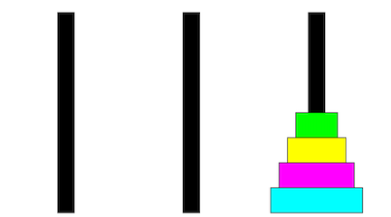
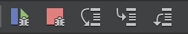

"Reproduce the bug" by Julia Evans
"Reproduce the bug" by Julia Evans
When you encounter a bug in a program, your first instinct is often to ask, “Why isn’t my program doing what I want it to do?”
One of the best ways to find that answer is to instead start with a different question: “What is my program doing, and why is that different than what I intended?”
The debugger is a powerful tool for observing exactly what a program is doing. With clear information about what is happening when a program is executing, you can relate that outcome to what the code asks for and then change the code to instead reflect your intentions.
This warmup exercise will give you practice working with the debugger in the context of complex recursive problems.
Towers of Hanoi animation
The Towers of Hanoi is a classic puzzle that has a beautiful recursive solution. You can read more about the puzzle and its history on the Towers of Hanoi wikipedia page.
The recursive function below will move a tower of disks from the start peg to the end peg, following the puzzle rules (can only move single disk at a time, larger disk cannot be placed on top of smaller disk)
void moveTower(int towerHeight, string startPeg, string endPeg, string tempPeg) {
if (towerHeight == 1) {
// base case: tower of single disk is easy to move
moveSingleDisk(startPeg, endPeg);
} else {
// recursive case:
// move smaller tower aside onto temp, this uncovers the largest disk that was at bottom
// move the largest disk from start to end
// move the smaller tower from temp to end
moveTower(towerHeight - 1, startPeg, tempPeg, endPeg);
moveSingleDisk(startPeg, endPeg);
moveTower(towerHeight - 1, tempPeg, endPeg, startPeg);
}
}

The warmup.cpp includes a correct solution for the Towers of Hanoi problem along with a charming graphical animation. Run the tests in warmup.cpp to watch the animation and marvel at how that tiny recursive function is capable of doing so much. Isn’t that amazing?
Now let's dive into the debugger to see the mechanism of action behind all the recursive goodness.
1) Debugger "Step" commands
In this exercise, you will explore the different types of step commands in the debugger and how that relates to tracing recursive code. The controls for stepping are on the middle toolbar of the debugger view in Qt Creator. They look like this:

The five icons from left to right are the controls for Continue, Stop, Step Over, Step Into and Step Out. If you hover the mouse over an icon in Qt, a tool tip will pop up with a label to remind you of which control is which.
Set a breakpoint on the first line of the hanoiAnimation function in warmup.cpp. Run the program in Debug mode and, when prompted, run the tests for warmup.cpp.
Step Over
When stopped at your breakpoint, locate the yellow arrow in the left gutter. The yellow arrow points to a line of code. Note that a breakpoint stops the program before this line has executed.
The upper-right pane shows the myHeight and totalMoves variables. Because these variables have not yet been initialized, their values are unspecified; they might be 0, or they might be random garbage values.
Use Step Over to advance through each line of the hanoiAnimation function:
- Step Over the initialization of
myHeight. Its value updates in the Variables pane (Pro tip: values highlighted in red are those that just changed). The yellow arrow in the left gutter advances to point to the subsequent line. - Step Over the call to
HanoiGui::initialize. The execution of this function sets up the graphics window in the initial configuration and displays it.- If needed, move/resize your windows so that you can see both the Qt debugger and the graphics window side by side.
- Step Over the call to
pause, and you'll note a short delay while the function is executing. - Step Over the initialization of
totalMoves. - Step Over the
moveTowercall and watch as the entire sequence of moves is animated. That was a big step!
Q1. What is the value of totalMoves after stepping over the call to moveTower in hanoiAnimation?
Step Into
The Step Into debugger action is right next to Step Over. If the next line to execute contains a function call, the action of Step Into goes inside the function being called and executes the first internal statement and stops there. If the next line to execute does not contain a function call, Step Into does the same thing as Step Over.
Restart the program and again run under Debug mode with a breakpoint on the first line of hanoiAnimation. Now let's practice with Step Into.
- Step Into the initialization of
myHeight. Since there is no function call on the line being stepped, Step Into does the same thing as Step Over: it simply executes the single statement. - Step Into to the call to
HanoiGui::initialize.- The editor pane switches to show the contents of the
hanoigui.cppfile and the yellow arrow is pointing to the first line of theinitializefunction. This code is unfamiliar; you didn't write it, and you didn't intend to start tracing it. - Step Out is your escape hatch. This "giant step" finishes the current function. When you use Step Out here, it executes all of the rest of the
HanoiGUI::initializefunction (window is displayed, etc.), and control returns back tohanoiAnimation.
- The editor pane switches to show the contents of the
- Next up is the
pausefunction, another library function you don't want to trace inside. You could step in and step out, but it's simpler to just Step Over. - You are interested in tracing inside the
moveTowerfunction, so use Step Into to go inside.- This first Step Into might bring you straight to the first line of
moveTower. However, some platforms will also step you through the backstage code that copies the string arguments on the way into the function. If your first Step Into brings you to unfamiliar string-copying code, use the Step Out escape hatch to finish it, and then Step Into again. Repeat for each of the three string parameters and you should eventually arrive at the first line ofmoveTower.
- This first Step Into might bring you straight to the first line of
- Once inside the
moveTowerfunction, Step Over each line. Control proceeds to the recursive case in theelsestatement. When you Step Over the recursive call tomoveTower, the GUI window should animate the moves that transfer the smaller tower of height 3 from the left peg to the middle peg. The value oftotalMoveswill update to count all moves made during the recursive call.
Q2. What is the value of the totalMoves variable after stepping over the first recursive sub-call? (In other words, within moveTower and just after stepping over the first recursive sub-call to moveTower inside the else statement.)
The next Step Over moves the largest disk from the left peg to the right peg. The final Step Over moves the three-disk tower from the middle to right.
Step Out
Now let's practice the Step Out debugger action. Remove all breakpoints, and set a breakpoint inside the base case of moveTower (on the first line of code inside the if statement). Run the program in Debug mode. When stopped at your breakpoint, use Step Out.
Q3. After breaking at the base case of moveTower and then choosing Step Out, where do you end up? (What function are you in, and at what line number?) What is the value of the totalMoves variable at this point?
Practice with Step Into/Over/Out
Understanding the operations of the different step actions is a great way to develop your understanding of recursion and its mechanics. Re-run the program, stop in debugger again, and try your own tracing and exploration. As you watch the animated movement, consider how it relates to the sequence of recursive calls. Observe how stack frames are added and removed to the call stack. When stopped, select different levels on the call stack to see the value of the parameters in the upper-right pane and the nesting of recursive calls. Here are some suggestions for when to use each kind of step:
- Step Over a recursive call is useful when thinking holistically. A recursive call is a "black box" that handles an entire subproblem.
- Step Into a recursive call allows you to trace the nitty-gritty details when moving from an outer recursive call to an inner one.
- Step Out of a recursive call allows you to follow along when returning or backtracking from an inner recursive call to the outer one.
Step In, Step Over, and Step Out allow you to watch recursion work at different levels of detail. Step In lets you trace along with each and every step. Step Over lets you see what a recursive function does in its entirety. Step Out lets you run the current stack frame to completion to see how the function behaves as a whole. These are handy actions to have in your debugger tool belt!
2) Test and debug the buggy subset sum
Your next task is to use the debugger to do what it’s designed for – to debug a program!
Forming all possible subsets of a collection uses the classic recursive pattern of include/exclude. Each node in the decision tree takes one element under consideration and branches into two recursive calls, one that includes the element and another that excludes it. The decision tree grows to a depth of N where N is the total number of elements in the collection. You have seen this in/out pattern in lecture examples to list subsets and form combinations. Similar patterns appear in exercises in section4.
The warmup contains the provided countZeroSumSubset which is a correctly implemented function to explore all subsets of an input and counts those subsets whose members sum to zero. If given the input {3, 1, -3}, the enumeration of all possible subsets would be { {3, 1, -3}, {3, 1}, {3, -3}, {1, -3}, {3}, {1}, {-3}, {} }. Two of those subsets sum to zero: {3, -3} and {}, so the function returns 2. Look over the implementation for countZeroSumSubsets to be sure your understand how it works before you begin debugging.
In addition to the correct implementation, there is a buggyCount version that contains a small but significant error. This buggy version is not far off – in fact, the difference is simply the additional of one character – but what difference a single character can make!
In this exercise, we are going to walk you through debugging strategy step by step:
- Use test cases to identify situations the buggy function has incorrect behavior then narrow to a minimal example.
- Run minimal example under the debugger to better understand how the wrong behavior relates to the code. What is the function actually doing that produces that incorrect result?
- Fix the bug by changing the code to correctly express the intended behavior.
Start at step 1. You have just written the buggyCount version and are ready to test it. Your test plan is to compare the result from buggyCount to the expected answer from countZeroSumSubsets on a wide variety of inputs to get solid test coverage.
Add some student test cases now. These early test cases should try small to medium-size inputs. Although you would later want to also include larger stress cases, in this early stage, such cases can be cluttering and unhelpful.
Once you have identified a test case that fails, winnow it down to the smallest possible form that exhibits the bug. Specifically, you’re aiming to find an input where
- this input produces the wrong result, and
- there is no simpler/shorter/smaller such input that produces a wrong result
Put your minimized test case in a STUDENT_TEST of its own. Run this test under the debugger, and trace the operation of
countZeroSumSubsets (the correctly written version) to observe the correct behavior. Diagram the decision
tree that is being traversed and match the tree to what see in the
debugger as you step in/out/over. Select different stack frames in the
call stack to see the state being maintained in each of the outer
frames.
After completing a thorough walkthrough of the correct version, now
trace buggyCount on the same input. Watch carefully to see
where in the process the bug manifests itself and how things veer
off-course.
Once you have done these steps, answer the following questions by editing the short_answer.txt.
Q4. What is the smallest possible input that you used to trigger the bug in the program?
Q5. Identify the one-character error in the code and explain why that bug causes the function to return the output you see when running on the minimal input you listed above. You should be able to specifically account for how the error causes the result to change from “completely correct” to “terribly wrong.”
This process we just walked you through forms a foundation for effective debugging.
- Test to identify the problem areas.
- Refine your test input to the simplest case that exhibits the bug.
- Use the debugger to trace that tiny test case.
- Observe what is actually happening and how it differs from what you intended.
- Relate those observations to your code so you know what statements need to be changed to correctly reflect your intentions.
Although we are introducing these techniques in the context of debugging recursive functions, finding a minimally reproducible test case and working backward from the observed to the intention can be an effective strategy for debugging any kind of code.
Happy bug hunting!